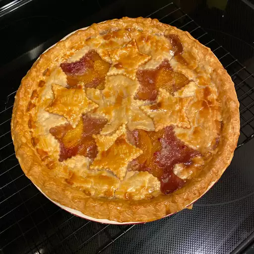

Peach Pie

Description
This easy peach pie uses no eggs. It's my family's favorite and is best eaten fresh.
Ingredients
- 1 cup white sugar
- ⅓ cup all-purpose flour
- ¼ cup butter, softened
- 1 (14.1 ounce) package double-crust pie crust, thawed
- 10 fresh peaches, pitted and sliced
Directions
- Preheat the oven to 350 degrees F (175 degrees C). Mix together sugar, flour, and butter in a medium bowl until crumbly. Set aside.
- Line a 9-inch pie plate with a bottom crust. Arrange a single layer of peaches in crust. Sprinkle with some of the flour mixture. Continue layering with remaining peaches and flour mixture.
- Cover with a lattice top crust.
- Bake in the preheated oven until crust is golden, about 45 minutes. Allow pie to cool before slicing.